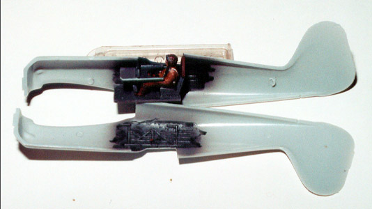
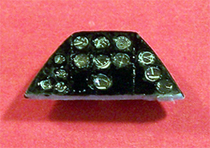
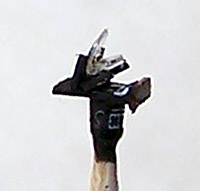
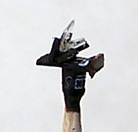
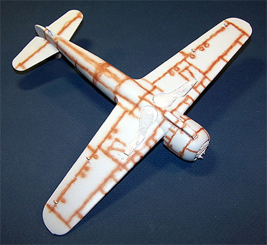
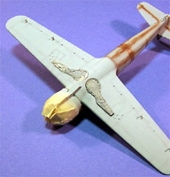

Kit #9804 Collector�s Market Value $25.77
Images and text Copyright � 2002/2005 by Matt Swan
This article includes multiple aircraft builds.
LTD 1/48 Romanian IAR-80 A
Kit #9804
Collector�s Market Value $25.77
Images and text Copyright � 2002/2005 by Matt Swan
This article includes multiple aircraft builds.
The 2002 build of this model has been sold and the 2005 build is being done on a commission basis. If you would like a copy of this aircraft built to your specifications contact me by email for terms and conditions.
Developmental Background
In an effort to modernize her armed forces, especially the Aeronautica Militara, Rumania nationalized the aircraft industry in the late 1930�s and tasked Industria Aeronautica Romania (IAR) with creating a new fighter aircraft. IAR�s initial efforts showed promise but were passed over in favor of Polish produced aircraft like the PZL P.11 and IAR produced these aircraft under license. These were phased out and replaced by the P.24, which provided the basic building blocks for the IAR 80. The IAR 80 basically was the fuselage and tail section of the P.24 mated to a 1000hp IAR-K14-1000A 14 cylinder radial engine driving a variable pitch VDM three-blade prop. The braced tail plane was replaced with a cantilever design and a rearward sliding blown canopy covered the once open cockpit. Early in the production run, armament was increased with the addition of two 7.9MM Browning machine guns in the outer wing panels and designated IAR 80A. She had a top speed of 342mph at 22,000 feet and was employed against the B-24�s raiding Ploesti. Unfortunately, serviceability was low and production was halted in 1943 in favor of the BF109. Ironically, only 30 109�s were produced before the factory was destroyed by B-24�s in April and May of 1944.
The Kit:
At first glance this appears to be a pretty simple, limited run kit. There are two trees totaling 51 parts with heavy sprues and several large injection pins, some in pretty bad areas. Some serious trim work, almost to the point of carving is required and I strongly recommend using a razor saw to remove the parts rather than the typical sprue snippers. All exterior pieces demonstrated finely engraved panel lines and a heavy amount of flash. There are no locator pins, which is probably a good thing as I find it�s easier to align the pieces without them. There are two vacuform canopies of mediocre quality � both have dimples dead center in the hood and the forward frames are very vague.
 The kit can be built as the original production fighter version or the up-gunned 80A, which requires additional panel lines to be scribed. The aircraft was originally designed as a dive-bomber but the kit lacks any parts or instructions to add under wing stores. The small images located to the left and right can be clicked on to view larger pictures. The lower wing panel had a terrible line of slag running across it and the cowling pieces had large chunks of plastic around the injection points that obliterated some of the cowl flaps. Several of the vents on the forward fuselage were filled with casting boogers and had to be re-scribed. All the parts display a fine level of flash around the outer perimeter and some light sanding is required. There exist vague markings at the tail of the fuselage for placement of the elevators. I think these were originally intended to be slots and holes but the molds must have quickly failed in this area so some careful attention is required when attaching these parts.
The kit can be built as the original production fighter version or the up-gunned 80A, which requires additional panel lines to be scribed. The aircraft was originally designed as a dive-bomber but the kit lacks any parts or instructions to add under wing stores. The small images located to the left and right can be clicked on to view larger pictures. The lower wing panel had a terrible line of slag running across it and the cowling pieces had large chunks of plastic around the injection points that obliterated some of the cowl flaps. Several of the vents on the forward fuselage were filled with casting boogers and had to be re-scribed. All the parts display a fine level of flash around the outer perimeter and some light sanding is required. There exist vague markings at the tail of the fuselage for placement of the elevators. I think these were originally intended to be slots and holes but the molds must have quickly failed in this area so some careful attention is required when attaching these parts.
The cockpit interior is somewhat basic with a few primary levers pictured in the instructions. I say �pictured� because they are not all actually included on the parts tree. I thought that I might have misplaced the throttle lever but when I examined a second kit I found it to be missing the part also. The pilot�s seat is inaccurate but can be modified with the addition of some stock strip to each side. There are no seatbelt details and there are some placement issues with other interior details. The rudder pedals are placed too far forward and so too is the instrument panel. The pilot would need legs twice normal length to reach the pedals and if the instrument panel placement is not corrected you�ll have a problem mounting the aerial mast. Generally speaking the parts fit together very well and little filler is needed during construction.
Decals and Instructions
The kit instructions consist of an A2 sheet folded to form three panels printed on both front and back along with additional information printed on the backside of the box. The cover panel contains a very in depth historical background of the aircraft and it�s mission. In addition, here is a note from Jerry Campbell explaining the idiosyncrasies of limited run kits and the need to clean up parts more than one would expect to with a mainstream production. The next two panels contain five exploded view construction steps that include color call-outs identified by federal standard number and some construction tips. The last three panels cover decal placement and exterior color schemes for three different aircraft. The exterior painting and decal placement instructions are 1:1 which is helpful when painting. The accuracy of the Lizard camouflage scheme here is questionable and consulting additional reference material may be a good idea before you start to paint. Overall, the instructions are well printed, clear in the assembly process and will get you to the end result without much difficulty.
The decals that come with the kit are exceptional in overall quality. As I mentioned before we have three aircraft options available to us and the sheet seems to do a very good job of covering all the necessary markings. The decal sheet does not cover much in the line of service stencils or warning marking but I�m not sure if the actual aircraft carried any in the first place. The print registry is right on the mark, color density is very good and they react very well with conventional setting solutions. When I applied decals to the model I found them to be nicely thin, slide right into place and snuggle down to the surface as well as any top line aftermarket decal.
Conclusions
This is probably one of the most significant aircraft in Romanian aviation during the Second World War. This kit displays all the primary issues that are associated with limited run kits but at least has good basic engineering and good parts fit. The instructions are clear and to the point, good color call-outs are included along with various construction tips. The decals are of the best quality and behave well. There are a few aftermarket items available like a set of weighted tires from True Details and a replacement canopy from Falcon (set #32). Unfortunately the Falcon set is pretty pricey if you are buying it just for this kit. Cutting Edge makes a wheel hub mask set and Engine and Things offers a K series Gnome Rhone engine if you want to open the service panels on the cowling. With some clean-up work the model can be built straight from the box and give a good representation of the aircraft or can provide the base for some serious super detailing. No matter what your modeling intentions are, be it build, super detail or collect this is definitely a kit worth getting your hands on.
2002 Model Construction:

I started with the cockpit assembly, gluing the seat, rudder pedals, joystick and presumably the landing gear lever to the floor pan prior to painting. Each piece required great care being removed from the tree and extensive trimming. The entire assembly was airbrushed with Gunze Sangyo RLM 75 gray. While this was setting up, I went to the fuselage interior and ran into a glitch. At this point the flap lever and throttle lever are to be glued to the sidewall � no throttle lever. It just wasn�t there. Couldn�t even find a place on the tree where it might have been so I had to scratch built it from some stretched sprue.
Now the interior is sprayed RLM 75 also. The dash is fairly simple without much detail, which is a problem as it will be quite visible when completed. Compared to the exterior detail, the cockpit was a major disappointment. I decided to use the extra pilot figure that came with the Tamiya DO 335. It took a lot of butt work to get him to sit correctly but when completed it hide most of the interior with the exception of the throttle lever. I sprayed the dash with Testors flat black then dropped some white wash into the instrument faces. Once the wash had dried down I used a Micron 005 black pen to draw in some details on the dials. The seat headrest was painted Testors 1185 Rust, the joystick grip, flap and gear handles were done in black and the throttle handle in red. Now everything got a dry brush of Model Master 1780 Steel and then washed with a combination of Grumbacher Lamp Black, water and future. The headrest needed several dry fit/trim sessions before it would fit and so to did the cockpit floor and dash panel.
Once everything dry fit well I began the process of closing up the fuselage. After the cockpit was secured to one sidewall I tape the fuselage together with masking tape and began gluing with Tenex 7R working from the tail forward, top first then bottom. Everything lined up nicely. The glue lines were trimmed up with a new Xacto knife then glazed with Testors contour putty.
While this was setting up I moved on to the wing. The kit provides an interior piece for the wheel wells but it leaves several large gaps. I closed them up with .015-styrene strip and some more contour putty. The wheel well interior got the same paint, dry brush and wash as the cockpit. I taped the wing halves together and glued them with Tennex 7R. More trimming. There was a large dimple in the left wing leading edge that needed putty.
200 and 400 automotive emery cloth was used to sand all the seams. I decided to build the �A� version so I located and drilled out the mounting holes for the additional Brownings and the Pitot tube. The �A� version needed an additional panel line scribed. Once I determined the location from the instructions, I pressed a flexible steel ruler over the wing and scribed the line.
Now I trimmed and dry fit the wing to the fuselage. The fit was not too bad and required only minimal putty at the wing root. The tail plane has no well-defined locator markings. The right side has two vague dots on it and two corresponding marks on the fuselage while the left has a vague rectangular tab and corresponding mark. I drilled part way through the fuselage on the right side and used a Xacto knife to open the rectangular slot on the left then dry fit the pieces. When cleaning up the tail planes you have to be very careful not to remove the locators. During the dry fit I found the both tail planes wanted to mount with a severe down angle and this had to be corrected. Once they are glued in place I checked right/left alignment several times before the glue set up.
Once the main body components had been assembled, with the exception of the engine and cowling, I went over all the glue joints with emery cloth. I found that several of the fuselage vents behind the cowling were filled with plastic. These were carefully opened up with a Xacto knife and the edges were sanded smooth. The wheel wells and cockpit were masked with Stick-To-It from Darice. The aileron mass balancers and tailskid were installed and then the entire structure was painted with a gray primer to reveal any additional defects. A couple of areas around the wing leading edge needed to be rounded off a little more and then it was ready for some color.
First, the bottom of the wing tips and the fuselage ahead of the tail was painted with Model Masters Chrome Yellow and masked off after drying overnight. Then the under side was painted with a mixture of 30% Testors Sky Blue and 70% Testors Flat white. After this had dried overnight I masked the sidewalls and around the nose section. The topcoat started with an overall layer of Testors Flat tan. While the tan was drying I began work on the engine and cowling.
The K14 engine is comprised of a forward and rear cylinder bank. Just like everything else on this kit there was a lot of flash that needed trimming. The cowling pieces are molded to join on the sides rather than the top and bottom. This provides less opportunity for damaging seams where they would be really visible. I pressed a dab of Stick-To-It into the back area of each cylinder bank and stuck a toothpick into it to give me a painting handle. I drilled a small hole into the propeller face and superglued a toothpick to it. The cylinder banks were air brushed over-all steel and the propeller, flat black. The engine crankcase was painted black-gray and the ignition harness was edged with red. Once everything was dry I applied a black wash and then assembled the engine.
The toothpick gets snapped off from the propeller, the spinner gets glued on and the seam glazed with contour putty. After sanding down the glazing, I masked the blades off and applied Chrome Yellow to the spinner. After it had had several hours to dry I removed the masking and dry brushed the leading edges of the blades with steel.
I cleaned up the cowl pieces and rescribed the coolant flaps as well as possible then glued the halves together. The seams needed glazing and then I had to rescribe all the panel lines because they are so fine that they disappear quickly under sandpaper. The injector pins inside the cowling need to be removed and trimmed smooth or it won�t slip over the engine when complete. The cowl was painted RLM 75 on the interior, Chrome Yellow on the exterior and set aside. Unfortunately, you cannot see any of that engine detail once everything is complete.
Okay, now I�m back to the main fuselage. The flat tan has had an opportunity to dry completely and can now be masked for the camouflage pattern. I�m using the Stick-To-It again as this lets me create a variable line that will be finely feathered. Roll out the material into thin strings and apply over the tan in the desired pattern. Cover the interior areas with masking tape and it�s ready to paint.
I used Gunze Sangyo RLM 83 Dark Green thinned about 20% with distilled water. Air pressure needs to be kept to about 20 psi on the airbrush and you have to be certain to keep the gun tip at right angles to the surface being painted or you�ll get paint ridges. I used this technique on a ME 109 F-2 last summer when the mercury hit 96 and the Stick-To-It didn�t want to release. I put the model in the refrigerator for about five minutes and it released just fine. The wife got a little hot when she found it in there but that�s just one of the risks of the hobby. Sometimes you�ll get small bits that will stay on the plane, just take a ball of the stuff and gently touch it to the offending area and it�ll clean right up.
Once the primary colors have set up the masking is removed. Now I turned my attention to the landing gear. The kit wheels were just plain lame and had to be replaced with True Details wheels for the IAR 80. The gear doors are molded as one piece for the closed position and need to be cut apart into three sections. The gear struts need a lot of trim work and were painted RLM 75 as were the interior of the gear doors. The tires were painted flat black and the hubs RLM 75. After the kit components and wheels were assembled I used medium fuse wire to run brake lines and cut small strips from the foil from a wine bottle to create the tie downs. The brake lines were painted Black-Gray. The wheels were washed with a Lamp Black wash while the rest of the assembly was washed with Grumbached Van Dyke Brown and set aside to dry.
Next I prepped the exhaust stacks, once again, heavy trimming was involved. The primary stacks needed to be drilled out. They are oblong so I drilled a central hole with a welding tip drill and then enlarged it with a Xacto knife to match the exterior curvature. The secondary stacks, which are under the engine, were drilled out with a very fine bit. The exhaust ring and stacks were painted rust and black in the drilled out areas.
Things are getting close now. Everything sat overnight again to let the paint dry thoroughly. The landing gear was installed and then the exhaust ring was positioned. Next the engine assembly was attached and the cowling slipped over and glued in place.
Another problem cropped up here, the engine did not want to center in the cowling and had to be removed and repositioned. The primary exhaust stacks were too long and I cut about an eighth of an inch off then sanded the backside down so they would slip easily into place. The lower stacks fit nicely.
I cleaned out the gun mounting and pitot holes with my drill. The kit guns were little more than stubs of plastic and I replaced them with Aries MG131 machine gun barrels. Gunze Sangyo Burnt Iron was used for the gun barrels and the Pitot tube was painted with flat white and flat red stripes. After a little drying time the entire plane was sprayed with Testors Clear Gloss Top Coat. While this was drying down, I mixed a dab of Grumbacher Lamp Black with about a teaspoon of water and a drop of dishwashing detergent. This mixture was applied to all the panel lines rather liberally. After it had barely dried down I used a damp tissue to wipe off the excess. Not only did this darkened the panel lines nicely but added some weathering effect to the overall finish. Model Master Steel was dabbed on to the leading edges with a chopped brush. After additional drying time and another coat of clear before the decals can be applied.
The decals are nice and thin and went on with no trouble. A little Micro Sol snuggled them down perfectly. I used a little more of the panel line solution over the decals to accentuate the panel lines that were covered then used Tamiya X-19 smoke to create the exhaust trails and gun blast marks. The propeller was attached and Testors Dull Coat Lacquer was sprayed over the model and it was set aside to dry some more.
I cut out the canopy with the Dremel, dipped it in future and masked it off once it had dried. After being sprayed with RLM 75 gray it was coated with the dark green. A hole needed to be drilled through the top for the ariel mast. Invisible thread was used to make the ariel with dot of super glue to represent the insulators and then painted.
Overall it was a very satisfying kit and an unusual addition to my collection, definitely not a beginner�s kit.
 Materials and Supplies:
Materials and Supplies:
3M emery clothe 200 and 400
Aries MG131 Machine guns #4023 from Squadron
Darice Stick-To-It
Diamond needle files
Dish soap
Future floor wax
Gap filling super glue
Grumbacher Lamp Black
Grumbacher Van Dyke Brown
Gunze Sangyo Black Gray RLM 66
Gunze Sangyo Burnt Iron
Gunze Sangyo Dark Green RLM 83
Gunze Sangyo Gray RLM 75
Invisible Thread
LTD IAR 80A Kit #9804 from Squadron
Masking tape
Medium fuse wire
Micron 005 black pen
Micro Set solution
Micro Sol solution
Model Master Chrome Yellow
Model Master Steel
Tamiya X-19 Smoke
Tennex 7R
Testors Clear Parts Cement
Testors Clear Top Coat
Testors Dull Coat Lacquer
Testors Flat Black
Testors Flat Gray
Testors Flat Red
Testors Flat Tan
Testors Plastic Cement
Testors Rust
Testors Silver
Testors Sky Blue
True Details IAR 80 Wheels #48075 from Squadron
Welder�s tip drill
Wine foil
Xacto #11 blades
2005 Model Construction:
5/27/05
A lot of things have happened since I built the first kit in early 2002. Besides acquiring a considerable amount of new modeling skills I have also added new paint lines, a new airbrush, new types of fillers and primers and many other new tools to my modeling workshop. For some modelers building the Me-109 seems to be a compulsion but for me the compulsion is Romanian aircraft, the IAR-80 in particular. Recently the call has been hard to ignore and I have begun to look at new (to me) reference material on the IAR-80. Right away I find that some of the things I did on the first build were inaccurate and I want to fix that. The first build was good, don�t get me wrong but I know I can do better.
With my research complete I open the box and begin the build. I had forgotten just how much flash needed to be cleaned off of these parts � wow; I spent my first couple hours just getting stuff ready before I could even think about gluing pieces together. Relying on period photos gleaned from the Internet and contributed by modelers from around the world along with line drawings of the aircraft interior I began to dress the cockpit area. Using various sizes of magnet wire I recreated the larger pieces of wiring and plumbing visible inside. I also fashioned a few additional levers from wire and Evergreen stock plastic. The seat sides were built up with thin pieces of plastic card, a lock release lever was added to the landing gear handle made from scrap plastic and the rudder pedals were moved closer to the seat. I added bootstraps to the pedals made from thin strips of aluminum foil cut from a candy wrapper. A large injector pin had to be ground out from the kit sidewall detail with a fine burr bit in a Dremel motor tool. The floor pan was test fit several times to ensure all the new detail was going to clear then everything got a good coat of light ghost gray paint.
While this was drying I pulled a set of Lion Roar brass Luftwaffe seat belts from the stash and prepared them. The straps were painted with a military brown and the buckles were done with silver. I took a piece of round plastic rod and secured it in the chuck of the dremel then spun it against my razor saw to roughen the surface. This was then held near a lit match and bent to shape for an oxygen line. Cockpit details were picked out with black, dark gray, red and medium green paints. The Oxygen line was glued in place and a few strands of fine wire salvaged from a computer mouse cable were placed onto the sidewalls. The seat belts were super glued to the seat and bent to position. The entire interior was washed with a brown sludge wash and set aside to dry. After another test fit I was ready to glue the floor pan and upper instrument tray in place. The instrument panel will be detailed separately then installed aft of the kit indicated position which, according to all the reference material, is the correct placement. This also allows the aerial enough clearance to attach to the upper tray later on.
You may click on the small images above to view larger pictures
5/29/05
The fuselage was closed up and the glue seam dressed with Mr. Surfacer 500. Next, I turn my attention to the dash. The actual dash on an IAR-80 is a collection of three panels, a central section moved close to the pilot and two side panels set a little further back and angled inward. These are all supported by a series for tubular rods that are visible from outside the aircraft. Now this is a pretty complex arraignment and I don�t really feel like scratch building all of this today so instead I will dress up the kit dash to make it just a little closer to the real thing and keep it as a single panel. Maybe next time I will scratch build the entire dash.
The kit part is painted flat black and the interior of each instrument face gets a drop of flat white. Working with my Waldron punch set I cut a series of 1/48 and 1/72 scale Reheat instrument decals and placed them in each instrument face. They were set with some Micro-Sol setting solution then sealed with a drop of Testors Clear Parts Cement. Next, I cut short sections from a stock piece of Evergreen styrene rod and glue these to the backside of the panel to replicate the instrument casings. This gets a coat of flat black and short pieces of invisible thread are superglued to each instrument back. These are painted flat black and touched in spots with some silver paint. The middle section of threads were grouped together and tied off to create flow patterns to the wiring.


The completed dash assembly it dry fit into the cockpit and some light sanding is needed on each side. Finally, a good, snug fit is achieved. Note in the images below that a very small area of light gray panel is left exposed at the front of the dash. Another very visible piece here is the side-mounted compass. With my Waldron punch, I cut two discs of thin plastic and glued them together to form the base of the compass. This was painted black with a white surface and glued to the support table. A Reheat compass face was cut and attached to it.
There are still a few very visible features that are yet to be created in here. The first is a reflective gun sight and the second are the canopy slide rails. The gun sight will be the next little project.
6/26/05
 
Had to take a short break from this project to finish off another build but now I�m back. Two detail items have been on the bench for this. As stated in the last update the reflective gunsight was the next item to be scratch built. Using little pieces of Evergreen stock sheet and the clear card off a pack of batteries I went to work. The stock plastic was cut to size and assembled with an old black and white picture of the actual gunsight being used as reference. The actual sight used two round lenses and these were duplicated by using my Waldron punch set on the clear card. The mounting bracket was created by punching holes in some stock plastic sheet with the same size punch as was used for the clear parts. This was then trimmed to size and fitted to the assembly. Some areas were painted white for the compasses and Reheat decals were applied overtop the white. The head bumper was painted leather. This whole thing is very small, the picture is about 400% actual size and the assembly is currently mounted on the tip of a sharpened toothpick for handling.

Had to take a short break from this project to finish off another build but now I�m back. Two detail items have been on the bench for this. As stated in the last update the reflective gunsight was the next item to be scratch built. Using little pieces of Evergreen stock sheet and the clear card off a pack of batteries I went to work. The stock plastic was cut to size and assembled with an old black and white picture of the actual gunsight being used as reference. The actual sight used two round lenses and these were duplicated by using my Waldron punch set on the clear card. The mounting bracket was created by punching holes in some stock plastic sheet with the same size punch as was used for the clear parts. This was then trimmed to size and fitted to the assembly. Some areas were painted white for the compasses and Reheat decals were applied overtop the white. The head bumper was painted leather. This whole thing is very small, the picture is about 400% actual size and the assembly is currently mounted on the tip of a sharpened toothpick for handling.
The second item is the engine. The basic level of detail provided by LDT is not bad but I found a few areas lacking. The kit does not represent the very visible push rods that run in front of each cylinder and the reducing gear box is not detailed at all. I test fit the engine into the cowling to see just how much was going to be visible before starting to detail. I really did not want to spend hours on stuff you would never be able to see. I found that the reducing gear box would hardly be visible at all and decided to not bother with additional detail there. The push rods needed to be done but the tops of the cylinder heads would not be visible inside the cowling so no finishing work was necessary there. I used short lengths of magnet wire super glued in place for the push rods, painted the base engine with burnt iron, dry brushed with silver and washed with a sooty brown. Ignition wires were done with a very light gray and the push rods were done with brass. The face of the reduction gear box will be left off until the propeller is finished so that it can be make positionable. Next I am working on the landing gear and am perusing old photos as reference.
You may be wondering were all this reference material is coming from, well �. I have been talking to a group of Romanian modelers on their internet site Cartula.Net
and these guys have been very friendly and helpful. They have directed me to various on-line resources, have sent me images scanned from books and copies of pictures found in dusty old attics. If you have any interest in building Romanian aircraft visit their modeling website and take a look around. Even if you do not speak the language there are some there who are bilingual and will translate.
7/12/05
For the next subassembly I am working on the landing gear. In the picture to the left we have the base components that are provided with the LTD kit and the end result of some scratch work combined with some aftermarket stuff. Obviously the gear strut needs some serious clean-up before any work can begin. Once they had been cleaned up they were painted medium gray with silver oleos. Next some reference material is consulted to determine just what needs to be done to make these struts more accurate.
#1 First thing I wanted to do was drill out the exposed end of the axel to conform to historical documentation. This was done with my Welder�s Tip Drill and the largest bit it would accommodate.
#2 Next is the installation of a brake line. Using a medium sized magnet wire I pre-bent the piece to conform to technical drawing of the landing gear found on-line. Once the correct general shape was achieved the wire was secured with fine spots of medium super-glue in several points helped out with a little accelerator. The brake lines were painted flat tan.
#3 That the kit piece was lacking the brake lines was no great surprise after all, very few main line manufactures include this detail but the IAR had very prominent forward facing oleo arms and this omission was surprising. I went to my spares box and found some spare P-51 gear struts that had nice arms on them. These were cut off with a fresh razor knife and glued to the IAR struts with attention being paid to the correct location verse technical drawings.
#4 The kit wheels seem to be about the right size but the wheel hub detail is very soft. I elected to replace the kit wheels with pieces from True Details made specifically for this kit. The only drawback to these wheels are they are too flat. I will be going back and building up the lower surface a little to make them a little more accurate.
The gear doors are directly from the kit. They come as a single piece and must be cut into sections for use in the open position. There exists an error here in that the small upper door panel is done as a single piece projecting out from the strut at an angle. The correct piece would form an A shape against the lower wing surface � maybe I�ll make this modification on the next build � I�m getting tired of landing gear now.
7/25/05
Modeling time has been somewhat limited recently but I managed to squeeze in a little work on this one recently. The exhaust collective was painted rust and attached to the fuselage. The cockpit and landing gear bays have been packed with dampened tissue paper and the engine assembly has been attached. The cowling seam was sanded, filled with Mr. Surfacer 500 and sanded again until smooth. Some Dymo tape was used to help scribe the panel lines across the seam and the interior of the cowling was painted medium gray. When I test fit the cowling it would not slide over the exhaust collective. I placed a small sanding drum in my Dremel and sanded the lower edge of the exhaust collective and the interior of the cowling. I had to thin the cowling wall quite a bit before I got a good fit. The inside wall was repainted and the cowling is glued in place.
The leading edge of the wing had several small imperfections that were filled with Mr. Surfacer 500. I had a few spots on the seam for the elevators to the fuselage that also needed filling. These areas were wet sanded until smooth. All that needs to be done now is some tissue packing around the engine and she is ready for the first coats of paint.
8/1/05
I thought I was about ready for some paint but I was mistaken. There were just a few things I needed to take care of first. The mass balancers needed mounting holes drilled in the lower control surfaces and then to be glued in place. The cowling seam showed some issues after an initial coat of primer, as did the spine seam. Both of these areas were filled with Mr. Surfacer 500, allowed to dry then wet sanded. I actually had to do this twice before I was happy with the surface. After two days of this level of finishing work I was finally ready for some paint.
I�m pre-shading this kit with a dark Earth acrylic thinned with Windex and Liquitex flow aid. My air pressure is set at about 5 psi and I am at point blank range. With these settings I trace every panel line, access port and raised frame line. This will dry overnight and tomorrow I will begin with some Chrome Yellow on the cowling.

8/16/05
After the pre-shading had dried for a day I painted the cowling with Model Master enamel Chrome Yellow thinned about 50% with lacquer thinner and at a low air pressure. This was allowed another day to cure then was masked. The lower wing surface and the lower elevator surfaces were painted with Polly Scale RLM 76 acrylic light blue thinned heavily with Windex and with a drop of Liquitex flow aid. The lower area of the fuselage is not getting painted yet, unlike many aircraft of this era the camouflage pattern wraps completely around the fuselage. And another day passes while paint dries. This is why I generally have three or four builds going at any one time so that while one cures I can shift to another and keep modeling.
The next task here is to paint the yellow identification markings on the lower wingtips. Working with the LTD painting instructions I masked off the tips and painted them with the same Chrome Yellow mixture used on the cowling. Shortly after I finished this step it was pointed out to me that the LTD instructions were incorrect and that the yellow should cover nearly one third of the lower wing surface. This creates a bit of a problem because if I were to just remask and shoot the wing again I would get a visible paint ridge at the old color demarcation line. Out comes the sand paper and the demarcation line is wet sanded until smooth. The wingtip is remasked (correctly this time) and the panel lines are pre-shaded again because all the painting and sanding has pretty much screwed the original effect. Another layer of Chrome Yellow is applied and the masks are removed. Note that extreme care must be taken during this process to not break off the delicate mass balancers.

You may click on the images above to view larger pictures
9/4/05
Once the lower color had set for a few days I lightly traced the camouflage pattern onto the upper surface with a #2 mechanical pencil. The Dark Tan was then airbrushed freehand onto the pattern. After this had cured for a few more days I rolled pieces of Blue Tac into long thin strips and placed it along the predetermined camouflage pattern. Using thinned Tamiya Olive Green (yeah, I know it�s not dead on accurate but was the closest I could find) and working at a ninety degree angle to the Blue Tac masks I airbrushed the remainder of the pattern. The Blue Tac was immediately removed and a few spots were touched up with a wide soft brush.
Next the main landing gear was installed. I made retraction struts from two different sizes of Evergreen rod glued together. The kit machine guns were replaced with Aires MG-131 resin gun barrels. The Aires set is intended to make four guns and includes one spare barrel � since I needed six gun barrels I had to use two Aires sets to complete the arming of the model. Half way through the construction of the model I moved my modeling facilities to a larger room, during this move that real nifty gunsight I had made earlier was lost. I did not realize this until just now when I wanted to test fit the sight so now I have to build a second piece. While that dried I moved to the propeller. I had saved this until near the end as the kit design would have this glued in place and I wanted it to be able to spin. I took the kit back-plate and filed the outside edge to be beveled and fit into the gear reduction housing on the front of the engine. Next the propeller shaft went into the center hole and a flat piece of stock plastic was carefully glued over the tip to lock the propeller into the back-plate. Now the back-plate is superglued to the reducing gearbox and this step is complete.
Moving right along the model is sealed with Future Floor Polish and the decals are placed once that cured. I used Micro-Set and Micro-Sol to place all the decals. These were sealed with more Future and the panel lines were accented with a sludge wash. Once all this had dried for a day the model was coated with Polly Scale clear flat and the gunsight was installed. Weathering was done with a combination of ground pastels applied with a cotton swab and a rub stick. For some of the smaller smudges I applied the chalk with the smudge stick then softened it with the cotton swab. Paint chipping was done with a sharp silver artist�s pencil. With my welder�s tip drill I opened a hole in the front windshield for the aerial mast then installed these two pieces checking reference photos for the correct placement of the mast butt. I added two short lengths of magnet wire to act as canopy slide rails along both sides of the cockpit then tacked the rear canopy in place with some Testors Clear Parts cement. The antenna was made from some invisible thread drawn across a black magic marker and fixed in place with small spots of superglue and accelerator. The various insulators are simply drops of superglue painted white.
You may click on these small pictures to view larger images


{kind=link}
{kind=link}
{kind=link}
{kind=link}
{kind=link}
{kind=link}
{kind=link}
{kind=link}
{kind=link}
{kind=link}
{kind=link}
{kind=link}
{kind=link}
{kind=link}
{kind=link}
{kind=link}
{kind=link}